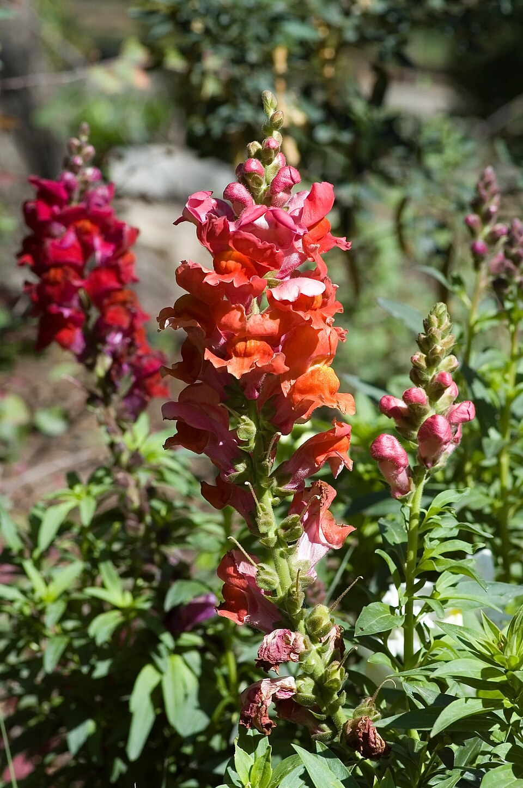

Snap Dragon
Antirrhinum majus

Snapdragon (Antirrhinum majus) is a flowering plant in the family Plantaginaceae, widely cultivated for its distinctive snap-like floral mechanism and ornamental value. It is native to rocky areas of Europe, the United States, and North Africa, and remains one of the most popular cool-season garden annuals worldwide.
More info: Wikipedia: Antirrhinum majus
At a glance
- Sun
- full sun
- Soil
- well-drained, moist, rich
- Water
- regular; avoid overhead watering
- Blooms
- spring to hard frost; struggles in long hot summers
- Hardiness zones
- 7-10 as a short-lived tender perennial; annual in colder zones
- Species
- Antirrhinum majus
- Also known as
- Snapdragon, Antirrhinum majus
Care
Summarized from the sources listed below (web research, 2026-11-02). Where sources disagree, the page says so.
What helps it thrive
Full sun and well-drained soil, moist and rich; dislikes overhead watering and struggles in long, hot summers. Rust is the major problem: if it appears, do not plant snapdragons in the same spot the next year. Other issues are leaf spots, downy mildew, root rots and aphids.
Growing season
Hardy in zones 7-10 as a short-lived tender perennial, usually grown as an annual in colder areas. Plant in early spring or in fall (it tolerates cold); planted in mid to late summer it blooms until a hard frost.
Fall tasks
Keep watering and remove spent flowers. Cutting tall types back to about 6 inches after flowering can prompt more flower stems. In St. Louis, Missouri Botanical Garden notes that fall cuttings can be overwintered, but buying new plants each spring is often easier.
Propagation
Seed sown at 16-18C (61-64F) in late summer or early autumn with young plants overwintered under glass, or sown in early spring (RHS). Fall cuttings are an option.
Dividing
Not applicable; propagate by seed or cuttings.
Research notes
Researched 2026-08-06.
Research (Jun 13, 2026)
Snapdragon, scientifically known as Antirrhinum majus, belongs to the family Plantaginaceae and is one of the most recognizable garden flowers in temperate regions. The common name 'snapdragon' refers to the flower's unique corolla structure, which is closed at the mouth and snaps open and shut when laterally compressed, resembling a dragon's mouth. This mechanism is an adaptation that restricts pollinator access, favoring bumblebees strong enough to force the florets open, ensuring efficient cross-pollination. The flowers come in a wide spectrum of colors including white, yellow, pink, red, orange, purple, and bicolored varieties.
Snapdragons are cool-season plants that thrive in spring and fall temperatures, typically between 40–70°F (4–21°C). They are often grown as annuals in most climates, though they are technically short-lived perennials in frost-free zones. Plant breeders have developed numerous cultivars ranging from dwarf varieties suitable for borders to tall varieties prized in cut flower arrangements. The plant has also been important in classical genetics research; Antirrhinum was used by geneticist Erwin Baur in early studies of inheritance, and its flower pigmentation has been studied extensively in molecular genetics.
Beyond ornamental use, snapdragons carry cultural symbolism associated with graciousness, strength, and deception in the language of flowers. They are commercially grown worldwide, particularly in the Netherlands, the United States, and Colombia, for the floral industry. Research into the genetic control of floral symmetry in Antirrhinum has contributed significantly to the understanding of the CYCLOIDEA gene and the evolutionary development of bilateral flower symmetry.
---
Research (Aug 5, 2026)
Snapdragon (Antirrhinum majus) belongs to the family Plantaginaceae and is native to rocky areas of the Mediterranean region, including Spain, Italy, and North Africa. The common name derives from the flower's unique bilabiate (two-lipped) corolla structure, which remains closed at the mouth and snaps open when laterally compressed, mimicking a dragon's jaw. This floral mechanism is an adaptation that restricts pollinator access to heavier bees strong enough to force the flower open, ensuring effective cross-pollination. Snapdragons are available in dwarf (6–12 inches), intermediate (12–24 inches), and tall (24–48 inches) varieties, and come in nearly every color except true blue.
Snapdragons are classified as short-lived perennials but are most commonly grown as cool-season annuals in temperate gardens. They perform best in the cooler temperatures of spring and fall, often declining or going dormant in intense summer heat, then sometimes reblooming as temperatures cool again in autumn. Seeds should be started indoors 6–10 weeks before the last frost date, as seedlings require light to germinate and prefer temperatures between 60–65°F. Well-draining, fertile loam with a slightly acidic to neutral pH (6.0–7.0) is ideal.
In garden design, snapdragons are frequently used as cut flowers due to their long vase life and striking vertical form. They are relatively deer-resistant and attract hummingbirds and bumblebees. Regular deadheading encourages continuous blooming. Watch for common issues such as snapdragon rust (Puccinia antirrhini), powdery mildew, and aphids, especially in humid conditions. Good air circulation and avoiding overhead watering help mitigate fungal problems.
---
Research (Aug 5, 2026)
Snapdragon, scientifically known as Antirrhinum majus, belongs to the family Plantaginaceae and is among the most recognizable ornamental flowering plants in temperate regions. The common name derives from the flower's unique bilabiate (two-lipped) corolla structure, which is pinched closed at the mouth and snaps open and shut when laterally compressed — a mechanism thought to restrict pollination primarily to bumblebees (Bombus spp.) large and heavy enough to force the flower open. This specialized pollination strategy is an example of mechanical floral isolation and has made the snapdragon a classic model organism in studies of flower development and evolutionary biology.
Snapdragons are native to rocky Mediterranean regions of southern Europe, North Africa, and parts of the southwestern United States. They are cool-season plants, thriving in spring and fall and tolerating light frost, which makes them popular in both temperate garden beds and greenhouse cultivation. They come in a wide range of cultivars spanning nearly the entire color spectrum except true blue, with heights ranging from dwarf (15 cm) to tall varieties exceeding 1 meter. Antirrhinum majus has also been extensively used as a genetic model organism; its floral pigmentation and patterning genes, particularly those controlling the MYB transcription factors, have yielded foundational insights into plant genetics.
In the context of a government relationships knowledge map, Snap Dragon appears to be a non-governmental concept that may have been entered in error or as a placeholder. It does not correspond to a government body, jurisdiction, or administrative relationship. The plant has commercial significance in the cut flower industry and horticultural trade, regulated in some jurisdictions under agricultural and plant import/export standards, but it holds no inherent governmental authority or function.
Sources
Earlier sources
- Antirrhinum majus - Wikipedia
- Snapdragon Flowers: Planting and Care - Almanac
- Cycloidea gene and floral symmetry - Nature Reviews Genetics
- Antirrhinum majus — Missouri Botanical Garden Plant Finder
- Snapdragon Growing Guide — University of Minnesota Extension — †
- Snapdragon Rust (Puccinia antirrhini) — Penn State Extension — †
- Snapdragon Plant Profile — Missouri Botanical Garden
- Floral Evolution and Pollination in Antirrhinum — Nature Reviews
- Antirrhinum as a Model Organism in Plant Biology — NCBI
Web research, 2026-11-02
- RHS: Antirrhinum majus
- Clemson HGIC: Snapdragons for Fall blooms
- NC State Extension: Antirrhinum majus
- Missouri Botanical Garden Plant Finder: Antirrhinum majus †
- Illinois Extension: Snapdragon
† Could not be checked automatically when this page was built; it may block automated visits.
Photo credits · Garden plant reference, built 2026-11-05. General gardening information summarized from public sources, not professional advice.